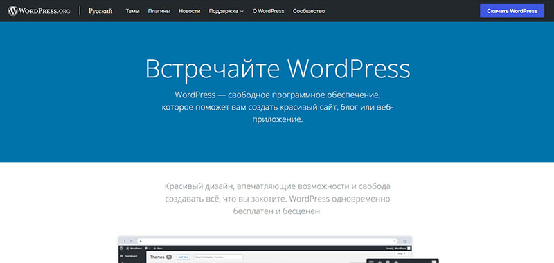

Веб-сайт – это место, где можно опубликовать подробную информацию о компании, услугах, условиях заказа и выполнении услуг, контактах и реквизитах. Сайт информирует ваших клиентов круглый год и ночью, и днем. Сайт можно расценивать, как собственное представительство в Интернете. Он может отражать ваши вкусы или рекламировать услуги, работать на продажу товаров или обучать. Всё зависит от того, какие цели вы преследуете, разрабатывая ресурс.
Что такое сайт
Сайт (от англ. site – место, позиция) — это интернет-ресурс, состоящий из одной, нескольких или множества виртуальных страниц. Все страницы связаны между собой ссылками и обычно объединены общей темой или задачей. Веб-страница — это одна из составных частей веб сервиса, интернет-магазина, портала или блога. Там может размещать статья с любой графикой, тексты. Адрес ссылки у каждой страницы разный, главное он должен быть понятный клиентам и поисковикам. Сайты написаны на популярных веб-языках и размещены в интернете (а именно на хостинге). На привычных нам сайтах держится весь интернет. Конечно, есть еще даркнет (DARKNET) — обратная сторона интернета. За посещение некоторых сайтов вас могут даже посадить - на работе даркнета построено множество преступных схем. Он отличается от других распределённых одноранговых сетей, так как файлообмен происходит анонимно (поскольку IP адреса недоступны публично).
Сайты — это единицы большой паутины составляющие основу глобальной сети.
Каждая страница сайта имеет свой уникальный адрес, по которому она доступна в глобальной сети интернет. Фактически страницы состоят из строк кода, которые пишут верстальщик и программист, используя языки программирования и прочие инструменты. С помощью кода задается оформление и дизайн страниц, а также функциональность элементов сайта. Существуют огромные сайты. Число их страниц выражается пятизначными цифрами. Это сложнейшие системы с особыми правилами подчинения разным задачам. Для них создаются специальные карты навигации. Но есть и другие формы существования в Интернете. Особым видом сайтов являются одностраничники. Эти ресурсы состоят только из одной страницы, созданной по специальной технологии. Подробнее поговорим об этом ниже в статье.
История появления
Сайты, как и Интернет, появились в начале 90-х годов; тогда же были созданы первый интернет-сервер и первый веб-браузер. Первым в мире принял решение запустить сайт Тимоти Джон Бернерс-Ли, изобретатель Всемирной паутины стал автором первого сайта. На нескольких страницах, объединенных гиперссылками, была описана технология World Wide Web. Именно Бернерс-Ли изобрел идентификаторы URI, протокол HTTP и язык HTML сетки: эти технологии по-прежнему используются при создании сайтов, хотя каждая из них была значительно доработана.
В 1994 году был создан консорциум Всемирной паутины (англ. world wide web consortium, или W3C), который бессменно возглавляет Тим Бернерс-Ли. Организация разрабатывает для Интернета единые принципы и стандарты, которые затем внедряются производителями программ и оборудования. Так достигается совместимость программных продуктов и повышается удобство использования Интернет-ресурсов.
В 2005 году в обиходе появилось понятие Web 2.0, что должно было отразить новую эпоху в истории интернета и сайтов. К Web 2.0 принято относить проекты, которые:
- Вовлекают пользователей в создание контента (соцсети, блоги);
- Имеют RSS ленты;
- Используют технологию Аякс: она позволяет изменять содержимое страницы без ее перезагрузки.
Сейчас в Интернете свыше двух миллиардов сайтов, и это число увеличивается каждый день.
Зачем нужен сайт
Компании, имеющие собственные веб-сайты, неоспоримо получают огромное преимущество по сравнению с конкурентами. Вот лишь несколько причин открыть веб-сайт.
{kind=link}
- Распространение информации. Веб-сайт — отличный способ донести до любой аудитории информацию о своей компании: рассказать о специализации бизнеса, деятельности, услугах, ценовой политики, любых контактных данных (адрес, телефон).
- Поиск новых клиентов для продажи товаров и услуг.
- Эффективная реклама. Если компания создает сайт, он автоматически становится ее инструментом для продвижения рекламы.
- Площадка для общения. Взаимодействие с клиентами, ответы на вопросы, ведение блога, информирование о предстоящих акциях, мероприятиях и т. д.
- Формирование имиджа, укрепление репутации. Сайт создает положительный имидж вашей компании в интернете, повышает статус организации, формирует лояльное отношение потребителей.
- Результативный маркетинг. Сайт позволяет продвигать и продавать товары/услуги.
- Поиск партнеров по бизнесу. Позволяет создавать онлайн коллаборации, которые приведут новую аудиторию.
- Предоставление информации и продуктах, ценах, преимуществах, условиях сотрудничества и т. д.
- Повышение эффективности бизнес-процессов. Сайт автоматически даёт много информации, работает круглосуточно, позволяет упорядочить взаимодействие с клиентами по разным каналам связи – любая CRM решает эту задачу. Сюда входят: прием заказов и оплаты онлайн, систематизация и обработка заявок.
Для пользователей сайтов выгода также очевидна: они получают с них информацию, покупают товары, общаются в социальных сетях, комментариях блогов и на форумах, работают с веб-сервисами (банкинг, почта, хостинги, конструкторы сайтов, доски объявлений, доставки еды, сайты знакомств и т. д.), находят работу и многое другое.
Как работают сайты
Для пользователя все предельно просто: браузер отображает набор страниц, на которых есть баннеры, система навигации, новости и прочее. Однако если посмотреть под внешнюю оболочку, можно увидеть все элементы, прописанные на языке программирования. Все запросы посетителя отправляются на сервер, где они моментально обрабатываются и в готовом виде поступают обратно в виде ответа.
{kind=link}
Страницы сайтов — это файлы с текстом, размеченным на языке HTML. Эти файлы, будучи загруженными посетителем на его компьютер, обрабатываются браузером и выводятся на его средство отображения (монитор, экран КПК, принтер или синтезатор речи). Отображение страницы можно изменить добавлением в нее таблицы стилей на языке CSS или сценариев на языке JavaScript.
Язык HTML позволяет форматировать текст, различать в нём функциональные элементы, создавать гипертекстовые ссылки (гиперссылки) и вставлять в отображаемую страницу изображения, звукозаписи и другие мультимедийные элементы.
Страницы сайтов могут быть простым статичным набором файлов или создаваться специальной компьютерной программой на сервере так называемым движком сайта, официальное название — Content Management System (CMS). Движок, который позволяет формировать страницы, исходя из запросов и потребностей пользователей. Внутри CMS есть 2 интерфейса: пользовательский и администраторский, то есть сторона для посетителей и для администратора. Добавление контента, настройка модулей, рассылка и прочие операции выполняются из блока администратора. Редактирование выполняется специальным WYSIWYG-редактором, который очень схож с Word. Для администратора важно наличие CMS и системы управления базами данных. Именно здесь будет сохраняться вся информация и содержимое ресурса. Система CMS работает на языке программирования php.
Движок может быть либо сделан на заказ для отдельного сайта, либо быть готовым продуктом, рассчитанным на некоторый класс сайтов. Некоторые из движков могут обеспечить владельцу сайта возможность гибкой настройки структурирования и вывода информации на веб-сайте. Такие движки называются системами управления содержимым.
Строение сайта и его компоненты
Любой сайт состоит из совокупности технических элементов:
{kind=link}
- Дизайн сайта. Любой дизайн сайта отвечает за визуальное отображение информации в доступном и понятном виде. Дизайнер определяет, каким образом конечный потребитель будет получать доступ к информации и услугам сайта. То есть занимается непосредственно разработкой пользовательского интерфейса. В большинстве случаев страницы включают в себя графические элементы. Их подготовкой занимаются художники иллюстраторы, фотографы, технические дизайнеры, шрифтовики, и т. д .
- Верстка. Когда дизайн готов, модули сайта объединяют в одно целое с помощью верстки. Верстка определяет, как данные текст и графика сайта будут отображаться в разных браузерах. Существует адаптивная верстка, в которой версии для разных устройств выглядят по-разному, и фиксированная, где элементы сайта имеют одни и те же размеры.
- Программный код (программирование). Программирование сайта занимаются backend-разработчики. Они соединяют графическую оболочку и функции ресурса, интегрируют верстку и систему управления. Благодаря программированию «оживают» кнопки интерфейса.
- Серверная часть. Веб-сервер – это компьютер с установленным на нем программным обеспечением, которое предназначено для того, чтобы отвечать на запросы веб-клиента круглосуточно в режиме реального времени. Чтобы пользователь (веб-клиент) увидел нужную ему страницу, его браузер должен получить от сервера соответствующий html-код. После чего код и все визуальные элементы распознаются и предстают перед пользователем в понятном виде.
- Клиентская часть. Это код, выполняемый в браузере, который может быть представлен программным кодом CSS, JavaScript, ActionScript, загружаемый вместе с html.
- Контент. Сюда входят тексты, картинки, музыка, видео, flash и прочие файлы.
- Система управления содержимым или CMS, движок. С помощью CMS можно редактировать страницы сайта, дополнять информацию, загружать изображения, видео, управлять оформлением.
- Доменное имя. Это уникальный адрес сайта в сети Интернет (например: yandex.ru) или простыми словами, домен – это зарегистрированное в сети имя сайта, набрав которое в строке поиска или ввода URL, можно перейти на необходимый ресурс.
- Хостинг. Это онлайн услуга, которая позволяет публиковать ваш сайт или веб-приложение в интернете. Вы арендуете пространство на сервере, на котором сможете хранить все файлы и данные, необходимые для правильного функционирования вашего сайта. Сервер – это физический компьютер, который работает без перерывов, чтобы ваш сайт был доступен всё время для тех, кто хочет его посетить.
Виды сайтов
{kind=link}
По доступности сервисов:
- Открытые — все сервисы полностью доступны для любых посетителей и пользователей.
- Полуоткрытые — для доступа необходимо зарегистрироваться (обычно бесплатно).
- Закрытые — полностью закрытые служебные сайты организаций (в том числе корпоративные сайты), личные сайты частных лиц. Такие сайты доступны для узкого круга людей. Доступ новым людям обычно даётся через т. н. инвайты (приглашения).
По природе содержимого:
- Статические — всё содержимое заранее подготавливается. Пользователю выдаются файлы в том виде, в котором они хранятся на сервере.
- Динамические — содержимое генерируется специальными скриптами (программами) на основе других данных из любого источника.
По цели создания:
- Коммерческие (на сайте можно купить товар, сделать заказ. Например, сайты услуг или интернет-магазин).
- Некоммерческие.
По физическому расположению:
- Внешние сайты сети Интернет.
- Локальные сайты — доступны только в пределах локальной сети. Это могут быть как корпоративные сайты организаций, так и сайты частных лиц в локальной сети провайдера.
По категории решаемых задач:
- Многофункциональные, многопрофильные ресурсы (охватывают различные направления).
- Новостные (площадки для обмена новостями).
- Узкоспециализированные, посвящены конкретной теме.
- Форумы и социальные сети (создаются для обмена информацией, общения).
- Ознакомительные (создаются для ознакомления аудитории с компанией/товаром/услугой и т.д.).
- Информационные или статейные (здесь размещаются статьи и интересные публикации).
- Развлекательные (их главная задача — чтобы пользователь хорошо провел время).
- Веб-сервисы (здесь пользователи могут выполнять те или иные задачи).
По типу сайтов и направленности
Интернет-представительства владельцев бизнеса (торговля и услуги, не всегда связанные напрямую с Интернетом):
- Сайт-визитка — содержит самые общие данные о владельце сайта (организация, бизнес или индивидуальный предприниматель). Вид деятельности, история, прайс-лист, контактные данные, реквизиты, схема проезда.
- Лендинг – это небольшой одностраничный сайт, полностью заточенный под то, чтобы попадающий на него клиент выполнил целевое действие.
- Представительский сайт — так иногда называют сайт-визитку с расширенной функциональностью: подробное описание услуг, портфолио, отзывы, форма обратной связи и т. д.
- Корпоративный сайт — содержит полную информацию о компании-владельце, услугах/продукции, событиях в жизни компании и бизнесе. Отличается от сайта-визитки и представительского сайта полнотой представленной информации, зачастую содержит различные функциональные инструменты для работы с контентом (поиск и фильтры, календари событий, фотогалереи, корпоративные блоги, форумы). Может быть интегрирован с внутренними информационными системами компании-владельца (КИС, CRM, бухгалтерскими системами).
- Каталог продукции — в каталоге присутствует подробное описание товаров/услуг, сертификаты, технические и потребительские данные, отзывы экспертов и т. д. На таких сайтах размещается информация о товарах/услугах, которую невозможно поместить в прайс-лист.
- Квиз. Этот сайт — маркетинговый инструмент, который тоже продает, но не прямо. На квизе клиент проходит тесты или викторины, тем самым выявляя свою потребность. Это позволяет подобрать для него наиболее подходящий товар или услугу.
- Интернет-магазин — веб-сайт с каталогом продукции, с помощью которого клиент может заказать нужные ему товары. Используются различные системы расчётов: от пересылки товаров наложенным платежом или автоматической пересылки счета по факсу до расчётов с помощью пластиковых карт.
- Промо-сайт — сайт о конкретной торговой марке или продукте, на таких сайтах размещается исчерпывающая информация о бренде, различных рекламных акциях (конкурсы, викторины, игры и т. п.).
- Сайт-квест — Интернет-ресурс, на котором организовано соревнование по разгадыванию последовательности взаимосвязанных логических загадок.
- Доска объявлений — сайт, на котором размещают объявления.
Информационные и развлекательные ресурсы:
- Тематический сайт — веб-сайт, предоставляющий специфическую узкотематическую информацию о какой-либо теме, блог.
- Тематический портал — это очень большой веб-ресурс, который предоставляет исчерпывающую информацию по определённой тематике. Порталы похожи на тематические сайты, но дополнительно содержат средства взаимодействия с пользователями и позволяют пользователям общаться в рамках портала (форумы, чаты, блоги) — это среда существования пользователя.
- Блог или сайт-статейник – это сайт, суть которого в отображении новостной ленты. Статьи идут в хронологическом порядке, могут быть разбиты на категории для удобства поиска. Главное для такого сайта – качество материалов и удобство для чтения.
- Региональные сайты — это обычно городские или региональные порталы. Среди новостных сайтов это рентабельный вариант, ибо трафик идет не только с новостей, но и может идти на статьи о достопримечательностях или известных людях города, или по справочнику с адресами (вариантов масса).
- Адалт сайты — это сайты с тематикой для взрослых. Это большое отдельное направление в сайтостроительстве, в котором присутствует огромная конкуренция и крутятся большие деньги.
- Каталогсайтов — например, Open Directory Project.
- Поисковые сервисы, поисковики — например, Яндекс, Google.
- Почтовый сервис. Обмен сообщениями и файлам в электронном формате.
- Сайты для скачивания.
- Сайты агрегаторы. Это платформа, которая собирает информацию в определенной тематике или нише и выдает его пользователю.
- Электронный справочник, словарь. Это издание практического назначения, с кратким изложением сведений в систематической форме
- Веб-форумы. Интернет-сервис для общения между пользователями интернета (более двух участников) на одну тему или на несколько тем (зависит от специализации форума). Одна из форм социальных сетей.
- Файлообменный Пиринговый сервис — например, Bittorrent.
- Датахостинговый сервис — например, Skydrive.
- Датаэдиторинговый сервис — например, Google Docs.
- Фотохостинг — например, Picnik, ImageShack, Panoramio, Photobucket.
- Хранение видео, видео сайты — например, YouTube, Dailymotion.
- Социальные медиа — например, Buzz.
- Дорвей — это сайт, созданный для сбора трафика и перенаправления его на другой сайт.
- Сервис редактирования данных — например, Google Docs.
- Комбинированные веб-сервисы (Социальные сети) — например, Facebook, Twitter. И специализированные соцсети: MySpace, Flickr.
Как создать сайт: подробная инструкция
Мы собрали всю информацию, которая пригодится при создании сайта, в пошаговой инструкции. Разберем подробно каждый шаг.
{kind=link}
- Проанализируйте цели будущего сайта и вашу целевую аудиторию, чтобы выбрать тип сайта (например, блог или портал).
- Посмотрите, что делают конкуренты.
- Определитесь, какой сайт вам нужен. Когда вы проанализировали бизнес конкурентов и определились с целями, подумайте о том, какие функции должен выполнять ваш сайт — продавать товары или услуги, знакомить пользователей с продуктом или просто работать на имидж компании, быть своего рода онлайн-представительством, авторитетной страницей. Нужно найти подход к аудитории, понять как зарабатывать и какой бизнес будет привлекать новую платежеспособную аудиторию. Выше мы расписали подробно виды сайтов, вам нужно только определиться.
- Выбираем платформу, на которой будет сайт: для новичков подойдет конструктор или CMS
- Настраиваем выбранную платформу, выбираем шаблон. Шаблон — это уже сверстанные HTML-страница с готовым дизайном. Можно взять шаблон за основу и изменить в нём цвет, шрифт, расположение блоков и элементов или сделать сайт в конструкторе с нуля.
- Проводим SEO-анализ и составляем семантическое ядро. Если SEO для вас темный лес и вы не хотите в нем разбираться, найдите хорошего SEO-специалиста.
- Придумываем название и покупаем доменное имя. Ниже в статье мы разберем основные тонкости этого процесса.
- Арендуем хостинг и SSL-сертификат.
- Рисуем структуру сайта и прототипы страниц. Вот простой пример структуры корпоративного сайта. Такие страницы есть почти на каждом подобном ресурсе:
- Главная (часто оформляют как лендинг).
- О нас (пишут о преимуществах и команде).
- Продукты / Услуги (под каждый продукт или услугу выделяют отдельную страницу).
- Отзывы/кейсы.
- Вакансии (описывают не только вакансии, но и преимущества работы в компании).
- Блог (если есть).
- Контакты.
- Правовая информация (политика конфиденциальности, политика cookies).
- Готовим контент: пишем тексты, делаем фотографии.
- Выбираем конструктор и собираем сайт. Ниже в статье примеры сборки сайта на популярных сервисах.
- Если конструкторы не подошли, делаем на коробочной CMS. Более сложный путь — выбрать CMS (систему управления контентом) и создать сайт с помощью дизайнера и программиста-верстальщика.
- Делаем макет. Соберите тексты для основных страниц сайта и блога, структуру сайта, прототип страниц, референсы, пожелания и передайте в работу дизайнеру.
- Отдаем макет на верстку и программирование. Для программиста вам надо подготовить:
- прототипы и готовые макеты страниц от дизайнера;
- тексты и изображения для наполнения сайта;
- подробное описание функционала сайта, на каких страницах и как он должен работать;
- доступы к CMS.
- Настраиваем SEO. Нужно прописать необходимые теги и ЧПУ (человекопонятные урлы), сделать перелинковку между страницами, создать карту сайта.
- Тестируем сайт. Обращаем внимание на:
- Скорость загрузки и отображение в браузерах
- Удобство для мобильных пользователей
- Функционал
- Понятность, юзабилити сайта
- Запускаем. Запустить сайт — это разместить его в интернете на вашем хостинге и домене. Или нажать в конструкторе кнопку «Опубликовать».
В зависимости от выбранного вами метода разработки сайта, инструкция может отличаться. Мы собрали основные шаги, которые помогут вам понять последовательность действий и оценить свои силы.
Способы создания сайта
Получить интернет-ресурс можно не только создав его самостоятельно или пройдя курсы. Многие компании обращаются к профессионалам, которые разрабатывают сайты и могут ответить на все вопросы. Поэтому, если вам нужен сайт вы можете обратиться к профессионалам, которые создадут вам его с нуля или на конструкторе. Однако для контроля сотрудников рекомендуем дочитать статью до конца, чтобы понимать все основные моменты и контролировать процесс, вы узнаете четкое руководство к действию, которому должен следовать разработчик. Также возможно купить уже готовые ресурсы на биржах, но пусть это и выглядит легко, бывают моменты, когда не подходит содержание, показатели или аналитика показывает плохие показатели данного сайта.
Рассмотрим самостоятельное создание сайта, все варианты и нюансы задачи. Ниже читайте обзоры создания сайтов. Есть три основных формата создания сайта:
{kind=link}
Конструкторы сайтов
Так создать сайт еще проще. Сайт тоже состоит из готовых блоков, но у пользователя нет доступа к коду, и на свой компьютер сайт сохранить нельзя. Обновлять и изменять сайт можно через браузер.Процесс состоит из нескольких понятных и простых шагов:
- Регистрация в конструкторе и вход в аккаунт, это займет несколько минут. Проходим простую процедуру регистрации, заполнив данные формы либо просто авторизовавшись в одной из популярных соцсетей (подойдут также аккаунты поисковиков Яндекс и Google).
- Выбираем шаблон дизайна для будущего сайта. Ваша задача будет выбрать наиболее подходящий по функционалу и визуальному оформлению шаблон, после чего можно приступать к его настройке и наполнению.
- Оформляем и персонализируем сайт. В первую очередь необходимо дать ресурсу уникальное имя.
- Финальные штрихи:
- Просмотрите мобильную версию, убедитесь, что вас все устраивает.
- Проверьте ранее введенные контактные данные, попробуйте работу форм и кнопок в деле.
- Обязательно сделайте «Предпросмотр» перед запуском сайта. Определитесь с тем, какие блоки показывать в десктопной версии сайта, а какие – в версии для планшетов или для смартфонов.
- Запуск. Нажмите кнопку «Опубликовать», чтобы созданный вами сайт стал частью всемирной паутины и был доступен всем пользователям.

Общие принципы создания сайтов на конструкторе:
- Выбор стилистики, дизайна. Каталоги шаблонов ограничены, а иногда внешний вид сайта становится основным критерием для конструктора. Главное, сократить к минимуму изменения настроек шаблона, ведь это ускорит запуск проекта.
- Сделать ресурс оригинальным. Сюда включены работы над сменой стоковых изображений на собственные, изменением цветовой палитры, размера и типа шрифтов. Здесь все просто – все элементы обязаны соответствовать фирменному стилю и должны отличаться от стиля конкурентов.
- Разработать уникальную структуру. Если сайт состоит даже из десятка страниц, каждая из них «затачивается» под отдельный товар, услуги, разделы.
- Подготовить контент. Наполнение сайта предполагает создание продающих текстов, таблиц, качественных фотографий, инфографики, видеороликов. Ни в одном конструкторе нет и не будет релевантного контента – они дают только дизайн и функционал.
Пример создания сайта на конструкторе Wix
Пошагово разберем, как создать сайт на конструкторе:
- Нажать кнопку «Создать сайт». Сайт, конечно, сразу не появится — сначала придется пройти еще несколько шагов.
- Войти через аккаунт в соцсети или зарегистрироваться как новый пользователь.
- Выбрать тип сайта. «Викс» предлагает 12 категорий, например бизнес, интернет-магазин или портфолио и резюме. Неважно, какой тип сайта выбрать на этом этапе, потому что «Викс» все равно покажет в меню все существующие шаблоны и категории
- Выбрать, как создавать сайт. Конструктор предлагает создать сайт с помощью искусственного интеллекта или в редакторе. Сайт будет задавать вопросы и по ответам подберет дизайн.
- Выбрать шаблон. Можно создать самостоятельно.
- Сохранить выбранный шаблон и выбрать домен. Чтобы работа не пропала из-за технических неполадок, сайт лучше сразу сохранить. Сохраненный сайт не появится в интернете, а будет лежать в разделе «Мои сайты».
- Заполнить сайт в редакторе и опубликовать его. На этом этапе можно добавлять и переименовывать нужные страницы сайта, менять фон и шрифты, добавлять меню, картинки и видео. Чтобы сайт появился в интернете, надо нажать кнопку «Опубликовать».
CMS-системы
CMS (Content Management System) – это система управления содержимым сайта. На профессиональном жаргоне CMS называют «двигатель сайта». На CMS создать сайт проще, потому что тело уже состоит из готовых блоков, а языки программирования, как правило, не используют.

Какую бы CMS вы ни выбрали, работать над сайтом будете в специальном личном кабинете — панели управления. Иногда это место также называют админкой или консолью. В плане дизайна вы сможете установить на сайт готовый шаблон и настроить его отдельные элементы прямо в панели управления CMS: шрифты, цвета, изображения, логотип, кнопки, ссылки. Возможности настройки будут зависеть от шаблона.
В плане функционала сайта сразу после установки CMS на сайте будет необходим минимум, но отсутствующие функции обычно можно подключить отдельно. Это делается с помощью приложений. Их называют расширениями, плагинами или модулями. С их помощью на сайт можно добавить, например, функционал интернет-магазина, контактную форму, всплывающее окно, форму подписки на рассылку, онлайн-чат, популярный в вашем регионе метод оплаты или доставки.
CMS обычно состоит из двух основных компонентов:
- приложения для управления контентом (CMA) в качестве внешнего пользовательского интерфейса, позволяющего пользователю добавлять, изменять и удалять контент с веб-сайта без вмешательства веб-мастера;
- приложение доставки контента (CDA), которое компилирует контент и обновляет веб-сайт.
Основные функции CMS:
- предоставление инструментов для создания содержимого, организация совместной работы над содержимым;
- управление содержимым: хранение, контроль версий, соблюдение режима доступа, управление потоком документов;
- публикация содержимого;
- представление информации в виде, удобном для навигации, поиска.
Пример создания сайта на CMS WordPress
Создание сайта на Вордпресс состоит из простых шагов:
- Выбираем доменное имя и хостинг.
- Устанавливаем CMS на хостинг. При установке система пришлет пароль и логин для входа — их надо сохранить. После этого можно попасть в консоль управления сайтом, если ввести в строке браузера http://название сайта/wp-admin/.
- Настроить сайт через консоль. Консоль — это пункт управления сайтом. Через консоль можно менять дизайн и меню, добавлять записи, загружать медиафайлы, анализировать активность, обновлять плагины. Все, что можно сделать с сайтом, делается через консоль.
- Выбрать темы/шаблоны для сайта. Это можно сделать в консоли, если нажать на кнопку «Настройте свой сайт» или выбрать вкладку «Внешний вид». Темы меняют не только внешний вид, но и структуру страницы. В разных темах содержимое страниц будет показано по-разному. Скачанные темы останутся в консоли — позже их можно будет удалить. Выбранную тему тоже надо настроить: добавить меню, изменить цвета или фон.
Шаблоны — это набор служебных файлов, которые организуют дизайн и стиль страниц сайта. Можно использовать свои шаблоны или изменить HTML-код уже существующих, если есть опыт. Шаблоны от одной CMS не подходят для другой.
- Добавить меню и название (имя) сайта. Это можно сделать через кнопку «Настройте свой сайт» или через вкладку «Внешний вид» в меню консоли. Можно создать не одно меню, а разные варианты, например, для мобильных и стационарных устройств или для подвала страницы.
- Подобрать и добавить контент через консоль. В больших проектах за контент отвечает контент-менеджер или специально обученный человек. Записи добавляются по одному и тому же принципу — в меню надо нажать на «Добавить новую запись». При этом надо выбрать нужную страницу или рубрику, если их несколько. Ничего сложно в наполнении сайта нет, но это монотонная и однообразная работа. На сайте информация появится после того, как нажмете кнопку «Обновить» или «Опубликовать».
- Готово, можно полноценно использовать готовый сайт.
{kind=link}
{kind=link}
{kind=link}
{kind=link}
Самостоятельное создание сайта с нуля
При самостоятельном создании сайта важно знать основные коды написания, которые станут основой сайта и HTML разметку. HyperText Markup Language — язык разметки гипертекстов, универсальный язык, предназначенный для описания веб-страниц. Он указывает браузеру, что и как нужно отображать при загрузке страницы в браузере пользователя. Каждый из его тегов описывает фрагмент страницы. HTML — это язык гипертекстовой разметки. С помощью тегов HTML описывает, что есть на странице: картинки, текст, таблицы или видео. А стили описывают, как все это выглядит. HTML является базой некоторых языков.
Коротко о распространенных языках программирования:
- PHP. Это язык сценариев общего назначения, исходный код — открытый. Синтаксис достаточно легко поддается освоению, имеет немало общих черт с C, Java и Perl. Главное преимущество PHP заключается в том, что с его помощью разработчики могут оперативно создавать динамически генерируемые веб-страницы.
- Python (Питон). Высокоуровневый язык программирования общего назначения, ориентированный на повышение производительности разработчика и читаемости кода. Синтаксис ядра Python минималистичен. В то же время стандартная библиотека включает большой объём полезных функций.
- Ruby (Руби). Язык обладает независимой от операционной системы реализацией многопоточности, строгой динамической типизацией, сборщиком мусора и многими другими возможностями.
- ASP. Разработчиком данного языка является Microsoft. Технология позволяет разрабатывать приложения для WWW. ASP легко и быстро. Платформы для работы ASP: Windows NT и IIS (Internet Information Server). Не совсем корректно называть ASP языком, скорее, это именно технология для подключения программы к Web-страницам.
- JavaScript. Главное отличие состоит в том, что он подключается напрямую в HTML-файл. Сценарий, написанный на JavaScript, проходит обработку интерпретатором, встроенным в браузер. Многообразие возможностей javascript обуславливает популярность языка.
- Perl. Это основное средство для создания приложений CGI. С его помощью выполняется администрирование веб-серверов и других систем. Простота и оперативность написания сценариев на данном языке привели к его адаптации на такие платформы, как Windows, Mac и т.д.
Самостоятельное создание сайта с нуля, без конструктора или CMS, состоит из трех основных этапов:
- Создание макета сайта. Именно на этом этапе появляется четкое визуальное представление, как будет выглядеть создаваемый интернет-ресурс.
- Верстка сайта.На этом этапе приступают к верстке сайта из макета .psd, мобильной адаптации и тестированию на корректное отображение в различных браузерах.
- Внедрение PHP. На этом этапе сайт превращается из статического в динамический.
{kind=link}
Несложные сайты-визитки делаются с помощью языков разметки и стиля (HTML, CSS) и простых языков программирования: JS, PHP.
Для сложных интернет-сервисов используются Python, ASP, JavaScript, Perl. Обычно разработчики учитывают:
- Тип и размер базы данных сайта;
- Оборудование выбранного сервера;
- Программное обеспечение сервера;
- Наличие форм для сбора данных клиента;
- Сложность графики сайта.
Опытные разработчики всегда оценивают задачу и выбирают язык программирования, на котором можно достичь лучшего результата за максимально короткое время.
Выбор платформы для сайта
Выбор платформы зависит от будущих задач сайта и предпочтений разработчиков. Хорошая CMS-платформа позволяет изменять сайт и добавлять в структуру то, что забыли или решили отложить на попозже. Для простого сайта, скорее всего, не нужна платформа со сложными базами данных, потому что они будут грузиться дольше, чем обычные страницы. В таком случае можно выбрать конструктор.
С помощью CMS можно расширять функциональность своего сайта (для этого существуют различные плагины и модули), тогда как возможности конструктора всегда ограничены определенным набором инструментов.
Лучшие CMS
CMS – это набор уже готовых программ и модулей, которые позволяют создать сайт на основе шаблонов. Использование систем управления сайтом CMS позволяет сделать изготовление сайтов максимально простым, сведя его к разработке веб-дизайна и настройке системы управления веб-контентом.
Бесплатные
- WordPress – система управления контентом (содержимым сайта) с открытым исходным кодом. На сегодня самая популярная CMS для сайтов, блогов, интернет-магазинов. Вордпресс — без преувеличения самая популярная система управления контентом в мире. Она отлично подходит для создания блогов, сайтов-визиток, корпоративных сайтов.

- Joomla – еще одна многофункциональная CMS-система, которая позволяет создать как простой сайт-визитку или корпоративный сайт, так и полноценный интернет-магазин.

- InstantCms – в первую очередь, этот движок предназначен для создания социальных сетей, городских порталов или блогов, а также сайтов знакомств и онлайн-клубов.
- Drupal — отлично подходит для создания корпоративных сайтов, сайтов-визиток, а также сайтов-портфолио, социальных сетей и интернет-магазинов.
- OpenCart –данная CMS-система предназначена, прежде всего, для создания интернет-магазинов. Вместе с тем стоит учитывать, что она проста в использовании, но при этом достаточно сложна в плане разработки. Как показывает практика, для разработки полноценного интернет-магазина на основе этого движка требуется привлечение опытного PHP-программиста.
- phpBB – отличная CMS-система, предназначенная для создания форумов.
- ModX — для установки и настройки сайта с помощью этой CMS надо знать основы веб-разработки. А чтобы работать с сайтом, достаточно уметь пользоваться «Вордом».
- TYPO3 — система управления сайтами с открытым исходным кодом и свободной лицензией. Является гибкой расширяемой системой с большим количеством модулей и функций.
- Serendipity — это приложение для ведения блога на основе PHP, которое дает пользователю простой способ вести онлайн-дневник, блог или даже полную домашнюю страницу.
Платные
- 1С-Битрикс (Bitrix) — мощная и многофункциональная система управления сайтами. В качестве ключевых особенностей стоит выделить простоту управления созданным сайтом, высокую производительность, интеграцию с 1С (это очень важный момент для российских интернет-магазинов), а также обширные возможности мобильного администрирования
- UMI.CMS – еще один достойный представитель платных CMS-систем. Специально для этого движка было создано 500 уникальных шаблонов, которые подойдут практически для любого сайта и при этом предоставят возможность доработки под каждый конкретный проект.

- osCommerce — платная CMS-система, предназначенная для создания современных интернет-магазинов и обладающая богатейшими функциональными возможностями.
- Shop-Script — масштабируемый движок интернет-магазина с полным набором инструментов для ведения онлайн-бизнеса.
Лучшие конструкторы сайтов
Конструкторы отличаются скоростью и простотой создания сайта. В зависимости от тематики и вида компании, можно создать даже за несколько часов. Вам не потребуются знания программирования и администрирования, дизайн уже предложен разработчиками, что сэкономит время на верстке, а управление и настройка происходят обычной компьютерной мышью и клавиатурой. Лучшие конструкторы современности:
- Tilda — это простой бесплатный конструктор с большим количеством функциональных возможностей. В библиотеке 480+ блоков и более 180 шаблонов страниц. Вы можете бесплатно создать сайт и разместить его по адресу вида «адрес.tilda.ws».
- Wix — конструктор с гибким визуальным редактором. У него много возможностей по созданию эффектного дизайна и встроенный магазин приложений.
- site123.com — конструктор сайтов с минимальными функциональными возможностями. По опыту, с ним разберутся начинающие пользователи, которые никогда самостоятельно не создавали блоги, интернет-магазины или лендинги.
- Nethouse — много возможностей для настройки страниц мероприятий (детские праздники, фестивали, концерты) и интернет-магазинов — с онлайн-платежами, каталогом, фильтрами, личными кабинетами и корзиной, можно разместить калькулятор, нажимая на который можно рассчитать примерную стоимость услуги.
- 1C-UMI — можно создавать сайт-визитки, лендинги, интернет-магазины, корпоративные сайты. В библиотеке конструктора более 100 шаблонов страниц.
- uCoz — можно создавать лендинги, форумы, блоги, интернет-магазины. В библиотеке конструктора более 300 шаблонов страниц.
- UKit — российский конструктор сайтов от компании uKit Group. Позволяет без знания программирования собрать сайт-визитку с формой заказа, сайт-одностраничник или небольшой интернет-магазин, самостоятельно оптимизировать ключевые страницы для поиска и опубликовать сайт в сети интернет на собственном домене или домене третьего уровня.
- Weebly для пользователей из России не работает, и сайт не открывается. Судя по отзывам, на нем можно создать бесплатный сайт или блог. Этот конструктор популярен в США и Европе.
- Mozello — латвийский конструктор, который переведен в том числе и на русский язык. Пользователи пишут, что бесплатный сайт могут удалить без предупреждения, если не заходить на него больше месяца.
- Craftum — мощный инструмент для создания типовых сайтов. Это идеальный конструктор для тех, кто совершенно не разбирается в веб-разработке. Особое внимание конструктор уделяет подаче визуального контента. Его функционал включает встроенный редактор изображений, коллекцию бесплатных кнопок, библиотеку картинок.
- LPgenerator — хорошо подходит для продвижения целого списка товаров (под каждый – отдельная посадочная страница). Бесплатного тарифа у конструктора нет.
Публикация созданного сайта в сети Интернет
Публикация созданного сайта происходит в три этапа, которые мы разберем подробно в статье ниже.
Подбор домена
Домен — это уникальное алфавитно-цифровое обозначение, которое является необходимым элементом адреса в сети Интернет. Доменное имя позволяет идентифицировать веб-сайт или адрес электронной почты в сети Интернет. Доменное имя состоит из нескольких частей:
- Первый уровень: буквы после точки. Они обозначают географическую зону и тематику сайта. Не все знают, что популярный домен «.com» означает «коммерческий»: изначально он присваивался интернет-магазинам. Домен первого уровня нельзя сочинить, его можно лишь выбрать из существующих.
- Второй уровень: буквы до точки. Это уникальное имя, которое придумывает и регистрирует владелец сайта. Например, Google.com. Домены первого и второго уровней составляют URL сайта.
- Третий, четвертый уровень и далее: части названия до основного домена, также отделенные точкой.
Также стоит отметить, что существуют домены различных уровней. Разобраться в этом очень просто – достаточно посмотреть на количество разделенных точкой частей адреса сайта. Например:
- google.ru – домен второго уровня;
- forum.google.ru – домен третьего уровня (он же поддомен).
Наиболее часто используются следующие доменные зоны:
- .ru — наиболее популярная доменная зона в рамках русскоязычного сегмента Всемирной паутины;
- .biz — часто доменная зона используется для сайтов бизнес-тематики;
- .com — эта доменная зона чаще всего используется для коммерческих и корпоративных сайтов;
- .info — в этой доменной зоне достаточно часто располагаются именно информационные сайты;
- .net — еще одна популярная зона, подходящая для проектов, связанных с Интернетом;
- .org — Первоначально предназначена для некоммерческих организаций;
- .рф — официальная доменная зона Российской Федерации.
Не рекомендуется использовать домены в зоне .рф. Связано это со сложностью в продвижении сайта, расположенного в этой доменной зоне. Если большая часть целевой аудитории находится в России, мы рекомендуем регистрировать домен в зоне «.ru».
При выборе домена для собственного сайта рекомендуем руководствоваться следующими принципами:
- оригинальность и легкость запоминания;
- максимальна длина – 12 символов;
- легкость набора на латинице;
- отсутствие в имени домена знака «тире» (желательно, но не обязательно).
- Чистота истории домена и отсутствие на нем каких-либо санкций со стороны поисковых систем. Это можно проверить с помощью сервиса «whois history».
Ключевые моменты:
- Используйте название компании в домене. Так меньше рисков, что возникнет путаница
- Можно рассматривать сокращения и аббревиатуры. Например, OK.RU.
- Избегайте дефисов и цифр в домене. Они снижают качество восприятия и запоминаемость домена.
- Не используйте сложных транслитов (например слово «игровой» можно написать как “igrovoj”, “igrovoy” или “igrovoi”) и трудно запоминаемых сочетаний букв. Простота и однозначность лучше всего.
- Проверяйте обязательно не содержит ли доменное имя уже существующий товарный знак, чтобы в дальнейшем избежать доменных споров.
- Избегайте слов с нарочно допущенным ошибками (SABAKOVOD.NET) или дополнительными буквами (WWWKONTAKTE.RU). Такие домены могут наводить на мысль, что ваш сайт мошеннический.
Купить домен можно у аккредитованных регистраторов, а также на специализированных сайтах. Домен можно зарегистрировать и бесплатно, например, при аренде хостинга или не в зонах .ru и .рф. Если вы получаете домен в подарок, лучше проверить, кому принадлежит имя по договору.
Подбор хостинга
Для того чтобы созданный вами сайт стал доступен всем пользователям сети, помимо домена вашему интернет-ресурсу понадобится еще и хостинг. Термином «хостинг» обозначается услуга по размещению вашего сайта в Интернете. Предоставлением подобных услуг занимается большое количество компаний, которые принято называть «хостерами».
Так как практически любой сайт состоит из разных типов файлов (базы данных, тексты, картинки, видео), доступ к ним с разных компьютеров осуществляется путем обработки запроса, обращенного к сайту, который располагается на сервере компании-хостера.
При выборе хостинга для создаваемого сайта мы рекомендуем руководствоваться следующими критериями:
- Объем дискового пространства. Для одностраничников достаточно 60 Мб; для сайтов с базами данных и графическими материалами — не менее 100 Мб.
- Набор технических функций и инструментов: поддержка скриптов, неограниченный трафик, защита от DDoS-атак.
- Уровень технической поддержки: будет ли вам оперативно оказана помощь при неполадках.
- Соотношение цены и качества хостинг-услуги. Сколько стоит хостинг и что вы получите за эти деньги.
Самые минимальные требования у сайтов-визиток и лендингов. Некоторые сервисы даже предоставляют для них бесплатный хостинг.
Цена хостинга может сильно варьироваться в зависимости от того, насколько крупный и посещаемый сайт вы создадите. Хорошая новость заключается в том, что большинству сайтов не требуется дорогой хостинг. Как пример хостинг-провайдеров: Beget — для начинающих и продвинутых вебмастеров, а также FastVPS для тех, кому нужен высокопроизводительный хостинг.
Многих интересует возможность получить бесплатный хостинг. Но здесь нужно быть осторожным — на бесплатном хостинге обязательно будет реклама, а сайт могут удалить без предупреждения. Скорость загрузки может быть низкой, а служба поддержки может отвечать медленно. Бесплатные хостинги могут не поддерживать базы данных, которые нужны для работы CMS. Кроме того, название бесплатного хостинга, скорее всего, будет в названии сайта.
Размещение готового сайта на сервере
Допустим, вы уже создали сайт, купили домен и хостинг. Теперь нужно разместить все файлы нашего сайта на сервере выбранного вами хостинг-провайдера. Есть сразу несколько способов сделать это.
- Загрузка содержимого вашего сайта по HTTP-протоколу с помощью панели управления хостингом.
- По протоколу FTP с помощью так называемого FTP-клиента.
Второй способ является наиболее быстрым. После установления связи с FTP-сервером выбранного вами хостинг-провайдера (обычно после оплаты хостинга провайдер передает IP-адрес, логин и пароль входа) доступное дисковое пространство отобразится в виде логического устройства (как и обычные жесткие диски компьютера) на одной из двух панелей используемой программы. После этого останется запустить процесс копирования и дождаться его окончания. Сайт опубликован.
Безопасность сайта
Целями злоумышленников чаще всего становятся сайты банков, мобильных операторов, известные медиапорталы, правительственные учреждения. Мелкие сайты нередко используются как плацдарм для тренировок перед взломом больших или для нецелевых атак, когда атакуются сразу сотни или тысячи ресурсов, выбранных по определенному критерию. Главная задача владельца — максимально защитить сайт от всех возможных угроз, чтобы не потерять важную информацию и собственные деньги. К основным типам уязвимостей относятся следующие:
{kind=link}
- недочеты системы аутентификации и управления сессией;
- небезопасные прямые ссылки на объекты;
- небезопасная конфигурация;
- утечка чувствительных данных;
- отсутствие контроля доступа к функциональному уровню;
- использование устаревших компонентов;
- не валидированные редиректы (несанкционированные перенаправления);
- кликджекинг (использование невидимых элементов).
Чтобы предотвратить атаку на сайт, следует соблюдать все требования по безопасности. Например, HTTPS — это протокол безопасной передачи данных, поддерживает технологию шифрования TLS/SSL. С помощью этого ключа браузер пользователя и сайт устанавливают защищенное HTTPS-соединение. Ключ шифрует данные – мошенники не могут получить доступ к паролям и номерам кредитных карт пользователей.
Для владельцев сайтов, на которых предполагаются финансовые онлайн-операции необходима установка сертификатов типа Business Validation. Такой вид сертификата надежнее, поскольку подтверждает не только владение доменом, но и связь компании с сайтом. Для верификации нужно отправить в верификационный центр пакет документов и принять звонок на корпоративный номер. Все сертификаты Business Validation делятся на несколько видов:
- Extended Validation SSL — сертификаты с расширенной проверкой, обычно используются банками, платежными системами, крупными интернет-магазинами — теми, кто работает с большими объемами денег.
- Wildcard SSL — защищает сам сайт и его поддомены. Используется в том случае, если предполагается несколько поддоменов с разной региональной привязкой.
- SAN SSL — поддерживает внешние и внутренние альтернативные доменные имена.
- Code Signing SSL — подтверждает безопасность кодов и программных продуктов с сайта, пригодится разработчикам приложений.
Вот несколько советов для проверки сайт на атаки:
- Держите всегда сайт в обновленном состоянии
- Держите всегда расширения, используемые на сайте в обновленном состоянии
- Не используйте варезные расширения
- Используйте антивирус для вашего ПК
- Сканируйте периодически сайт на наличие вирусов и подозрительных файлов
- Не передавайте через социальные сети и мессенджеры доступы на сайт или хостинг
- Создавайте отдельную учетную запись на хостинге для каждого сайта
Если ваш сайт взломали — найдите специалиста. Лучше обратиться к разработчику этого сайта и не давать доступы новым людям.
Индексация и продвижение сайта
Поисковики (Яндекс, Гугл и др.) получают ежедневно миллионы запросов и должны находить нужную пользователям информацию за доли секунды. Они не могут по каждому запросу сканировать весь интернет, в котором миллиарды интернет-страниц и текстов — на это не хватит никаких ресурсов и по времени это очень долго. Поэтому поисковые системы создают текстовые копии всех известных интернет-страниц. База этих копий называется index, а поиск и создание копий страниц и текстов — индексирование.
Найти любой сайт в интернете можно тремя способами:
- Нужно набрать в адресной строке браузера его точный адрес;
- Перейти по ссылке с другого сайта, ссылки в тексте;
- Ввести запрос в поисковую систему (найдет тексты, которые сервис проиндексировал).
Индексирование — процесс постоянный, так как сайты растут, появляются всё новые страницы и тексты, изменяется содержимое старых веб сервисов, создаются новые сайты. Поэтому специальные поисковые боты периодически обходят известные им ресурсы, находят и индексируют новые и измененные страницы, тексты. А также обнаруживают ссылки на неизвестные им сайты и индексируют их. Поэтому SEO мастера нередко используют перелинковку (внедрение ссылок на чужие страницы или проекты за плату). Обратите внимание на Robots.txt — это текстовый файл, который содержит параметры индексирования сайта для роботов поисковых систем. Обычно используется, чтобы скрывать страницы (текста и остальное) в поисковой выдаче. Чтобы сайт посещали представители ЦА, есть комплексы мер и методов: продвижение сайта. Вот основные и самые действенные:

- Поисковая оптимизация (SEO), «улучшение» сайта для того, чтобы он отражался в поисковиках на первой странице выдачи по различным запросам. Для этого компании создают в том числе блоги.
- Контекстная реклама — выдача рекламы пользователям по их запросам в поисковой системе или на основе данных, которые о них собрали рекламные сервисы.
- Медийная реклама — показ рекламных баннеров на сторонних сайтах.
- Партнерские программы. Это формат рекламной активности интернет-магазина или сервиса, направленный на увеличение продаж. Магазин предоставляет участникам партнерки ссылки, баннеры, тексты для рекламы своих товаров, не за спасибо, он выплачивает процент с покупок, совершенных пришедшими по рекламе партнера клиентами. Воспользоваться этой услугой может любой проект, работа которого официальна.
- Email-маркетинг — рассылки о новых товарах, продуктах, акциях по электронной почте. Для email-рассылок нужны адреса клиентов, которые можно получить с помощью сайта. Главное получите право на сбор и обработку персональных данных. Можно использовать сервисы, например, Unisender, который отправляет письма;
- SMM — продвижение сайта в соцсетях (например, telegram, куда клиент может подписаться) на специально созданных страницах компании или персоны. Дополнительно ссылки можно разместить на своем веб сервисе.
- Таргетированная реклама: контекстная реклама в соцсетях, настроенная по полу, возрасту, интересам типичного представителя ЦА. Проект получит максимально целевой результат, следствием которого вероятнее станет конверсия. Нужно правильно указать в статье или рекламном баннере интересы своей ЦА.
Полезные программы для начинающих вебмастеров
Мы собрали несколько полезных программ и сервисов, которые значительно облегчат и ускорят процесс самостоятельного создания сайта:
- Notepad++ — текстовый редактор, позволяющий создавать и редактировать исходный код создаваемого сайта. Отличная замена программе «Блокнот», входящей в состав операционной системы Windows.
- Adobe Dreamweaver — мощная и многофункциональная программа для создания сайтов. Помимо всего прочего она включает в себя возможность предварительного просмотра создаваемого ресурса.
- NetBeans – среда разработки приложений, которая позволяет эффективно работать с такими языками разметки и Веб-программирования, как HTML, CSS, JavaScript и PHP.
- GIMP — продвинутый редактор изображений, который можно успешно использовать для формирования web-контента. можно использовать как простой графический редактор, для ретуши фотографий, как сетевую систему пакетной обработки изображений или программу для воспроизводства изображений, а также преобразователь форматов изображений и т. д.
- WebStorm — интегрированная среда разработки на JavaScript, CSS & HTML от компании JetBrains. В этот программный продукт встроен удобный редактор кода, который поддерживает впечатляющий перечень различных программных языков. Средство взаимодействия с веб-сервером позволяет производить удаленное редактирование и настройку сайта.
- Atom – этот HTML текстовый редактор бесплатный, с открытым исходным кодом. Atom является кроссплатформенным приложением и работает таких операционных системах, как Windows, OS X и Linux. Благодаря умному механизму автозаполнения, Atom помогает быстрее писать код. Поддерживает в разработке такие языки как: HTML, CSS, JavaScript, Python, XML, PHP, Java, SQL, C# и многие другие.
- Brackets – это программный продукт Adobe, разработанный специально для дизайнеров и фронтенд разработчиков. Основная особенность редактора Brackets, выделяемая многими разработчиками — связь с Google Chrome в режиме реального времени. С помощью этого механизма, разработчик может сразу после внесенного изменения наблюдать, как все эти изменения будут отображаться в браузере.
{kind=link}
{kind=link}
Список самых популярных сайтов
Топ-10 самых посещаемых сайтов в России по статистике Similarweb.com на 2022 год.
Аналитический ресурс формирует список востребованных интернет-площадок на основании средних показателей просмотров страниц за последние 3 месяца. Топ сайтов на начало 2022 года, которые чаще всего посещают жители РФ:
- Yandex.ru — российский поисковик.
- YouTube.com — популярный видеохостинг.
- Google.com — поисковая система и мультисервисный портал.
- VK.com — социальная сеть ВКонтакте.
- Mail.ru — российская почта.
- OK.ru — российская социальная сеть, принадлежащая VK.
- Avito.ru — интернет-сервис для размещения объявлений о товарах, недвижимости, вакансиях и резюме на рынке труда, а также услугах от частных лиц, компаний и бизнесов.
- Wildberries.ru — международный интернет-магазин одежды, обуви, электроники, детских товаров, товаров для дома и других товаров.
- Gismeteo.ru — сайт прогноза погоды.
- Wikipedia.org — общедоступная многоязычная универсальная интернет-энциклопедия
ТОП 10 самых популярных сайтов в мире по статистике Similarweb.com:
- Google.com — поисковая система ТОП-1 в мире.
- YouTube.com — видеосайт.
- Facebook.com — социальная сеть.
- Twitter.com — соцсеть.
- instagram.com — социальная сеть с основным упором на фото и видео.
- baidu.com — лидер среди китайских поисковых систем.
- Wikipedia.org — онлайн энциклопедия.
- Yandex.ru — поисковик в России.
- Yahoo.com — почта.
- Xvideos.com — адалт сайт
Часто задаваемые вопросы
Мы рекомендуем начинать обучение сайтостроению в следующем порядке:
- основы HTML;
- основы CSS;
- основы PHP.
Что касается дальнейшего обучения и развития, для создания одностраничных сайтов будет полезно освоить такую программу как Adobe Muse. Если же вы захотите создавать многофункциональные сайты на заказ, обязательно найдите время на освоение CMS WordPress, ведь именно она сейчас является наиболее популярной и распространенной. Любой проект нужно понимать технически, поэтому мало знать только один сервис. Согласно рекомендациям специалистов, нужно изучить базовую работу популярных конструкторов и CMS.
Нет, нельзя. Даже если вы будете все разрабатывать сами (с нуля или на любой CMS), вам все равно нужно будет купить хостинг и домен. Это стоит не больших денег, но все-таки денег.
Если брать конструкторы сайтов, то на них можно бесплатно создать и протестировать сайт, но при этом нельзя бесплатно привязать к созданному ресурсу собственное доменное имя, получится только немного его изменить.
Вариант с бесплатными поддоменами, который часто используют любые конструкторы сайтов, или бесплатным хостингом не стоит рассматривать как полноценный.
Поэтому вложения, пусть и минимальные, потребуются. Но не стоит расстраиваться – стоит это обычно, как пара чашек кофе в месяц.
Каким именно будет сайт, зависит от ваших потребностей и цели сайта, рекомендуем смотреть конкурентов и уделить время интернет-маркетингу. Тем, кто хочет представить себя или фирму в глобальной Сети, достаточно визитки. Если на сайте необходимо хранить информацию для партнеров и клиентов (бизнес презентации, видео, каталоги), понадобится корпоративный сайт. Если назначение сайта — искать в сети покупателей и вы располагаете бюджетом на оптимизацию и продвижение сайта, нужен интернет-магазин. Квизы и лендинги станут удобными дополнительными инструментами для торговли онлайн, любая область бизнеса получит свои плюсы. Как заработать на сайте подробно говорим в статье выше.
Сейчас пользователи заходят на сайты со смартфонов так же часто, как с компьютеров. Но из-за большой разницы в параметрах экрана невозможно сделать сайт, который одинаково хорошо выглядел бы и на телефоне, и на любом большом экране. Из этого затруднения есть два выхода:
- Делать две версии сайта: обычную и мобильную;
- Использовать адаптивную верстку, при которой сайт подстраивается под девайс.
Адаптивный дизайн обходится дешевле, ведь необходимо разработать один сайт, а не два. Поэтому выбирайте грамотного верстальщика, который сможет вам сделать все под ключ, но стоить он будет не мало.
Это подготовка сайта для более эффективной индексации поисковыми системами, чтобы страница понравилась им. Хорошо оптимизированный сайт пользователи видят на первых строчках (в верхнем списке поисковика) в результатах поиска и чаще переходят на него. Занимаются оптимизацией SEO-специалисты (от англ. search engine optimization — SEO).
На самом деле, однозначного ответа на этот вопрос не существует. Все зависит от ваших целей и задач. Может быть, вы хотите изучить наиболее популярные CMS-системы? А может, научиться самостоятельно формировать исходный код создаваемого сайта? Нет ничего невозможного!
Ключевое отличие создания с нуля (будь то с помощью CMS-систем или исходного кода) от конструктора сайтов заключается в том, что создание сайта с нуля подразумевает возможность не только создать сайт, отвечающий именно вашим потребностям, но и управлять всеми возможностями, которые вы сами и заложили. В свою очередь, создание интернет-ресурса с помощью конструктора сайтов не потребует от вас наличия специальных технических навыков и много времени.
Стоимость сайта зависит от сложности разработки, стоимости хостинга и домена и затрат на продвижение. Над классным сайтом работает целая команда специалистов: программист, дизайнер, разработчик интерфейсов, специалист по продвижению. Поэтому разброс цен может быть значительным.
Следует обратить внимание на фундаментальные моменты, которые вы не сможете изменить потом, или они будут стоить слишком дорого, отнимут много времени. Важные аспекты:
- Назначение сайта — зачем нужен сайт и что изменится после того, как он появится.
- Целевая аудитория — это люди, которым может быть интересен определенный товар или услуга и которые готовы его купить. Людей из целевой аудитории, как правило, связывают какие-то общие характеристики или признаки. Важно определить свою ЦА и подстраивать сайт под них (дизайн, контент и товары).
- Геотаргетинг — это выборка людей по их местонахождению для того, чтобы показывать им сайт.
- Будет ли SEO-оптимизация. SEO-оптимизация — это постоянные действия с сайтом, которые позволят поисковым системам типа Гугла или Яндекса показывать его при определенных запросах.
Если сайт нужен для коммерческих проектов и важно, чтобы он появлялся в результатах поиска, лучше в самом начале обсудить оптимизацию с SEO-специалистом, чтобы потом не пришлось полностью менять структуру и функционал сайта.
Для начала следует определиться с целью сайта и направлением:
- Коммерческие цели создания сайта:
- продажа товаров и услуг
- личный или политический пиар
- передача ценной информации целевой аудитории с целью последующего получения прибыли
- создание положительного имиджа для коммерческой компании; создание сайтов для клиентов
- Некоммерческие цели создания сайта. Среди них можно выделить создание интернет-ресурсов для благотворительных организаций, как хобби, а также создание интернет-площадок, предназначенных для общения и обмена разнообразным контентом и информацией между определенными группами пользователей.
Решив для себя цель сайта, вы можете определиться с видом сайта, в зависимости от пожеланий и целей (лендинг, визитка, многостраничник, новостной сайт и т.д.). Подробно виды сайтов мы разобрали в статье выше.
Заключение
Для того, чтобы создать сайт самому понадобится некоторое количество средств и времени, объем которого зависит от выбора пути достижения цели и её сложности. Для самостоятельного создания веб-сайта вы должны обладать определенными навыками:
- HTML
- CSS
- PHP
- JS
- Умение написать уникальный контент
- Создать собственный веб-дизайн для сайта
- Знать основы продвижения
- Разбираться в настройках хостинга
Сложно переоценить значение сайтов в современном мире, ведь именно благодаря им люди получили превосходные условия для обучения, работы и, конечно же, развлечений. Именно на сайтах можно найти необъятное количество полезной и интересной информации, весело провести время на развлекательных сайтах, пообщаться с друзьями в социальных сетях, найти хороший фильм, сериал или музыкальные композиции и многое другое.
В данной статье мы разобрали особенности веб-сайтов, значимость конструкторов и CMS, как подобрать заголовок (название) веб сервиса, избежать проблем, и как происходит разработка сайта. Вам остается только следовать советам из статьи, разобраться в выбранным конструктором (как настраивать все в админке) и выбрать готовые тарифы. Если вы решили создавать веб-страницы самостоятельно, через прописывание кодов, то рекомендуем вовлечь в проект разных специалистов, которые готовы воплотить ваши идеи в жизнь. Контент-маркетинг, а также продвижение, следует начинать также на этапе разработки.
Оставить комментарий
Войти с помощью